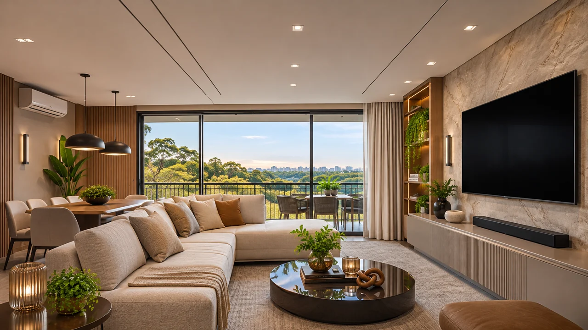
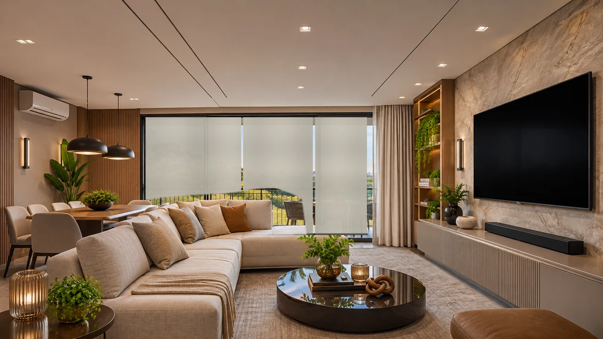

QUADRO 01 · ABERTASC01 / LIVING MODELO
Persiana motorizada.
De aberta a fechada, em 5 segundos.
0:00 / 0:05
CINEMA EM CASA · ETAPA 01
Uma sala. Várias experiências.
Esta primeira versão demonstra apenas o movimento da persiana para validar a biblioteca de vídeos. As transições de TV, LED e iluminação serão produzidas e homologadas separadamente, antes da montagem da cena completa.

QUADRO 02 · FECHADADemonstração 2.5D produzida localmente, sem uso de créditos. Não representa precisão física de uma obra nem conteúdo de IA PixVerse. Os componentes, seus retornos elétricos e modos de controle precisam ser validados por projeto.